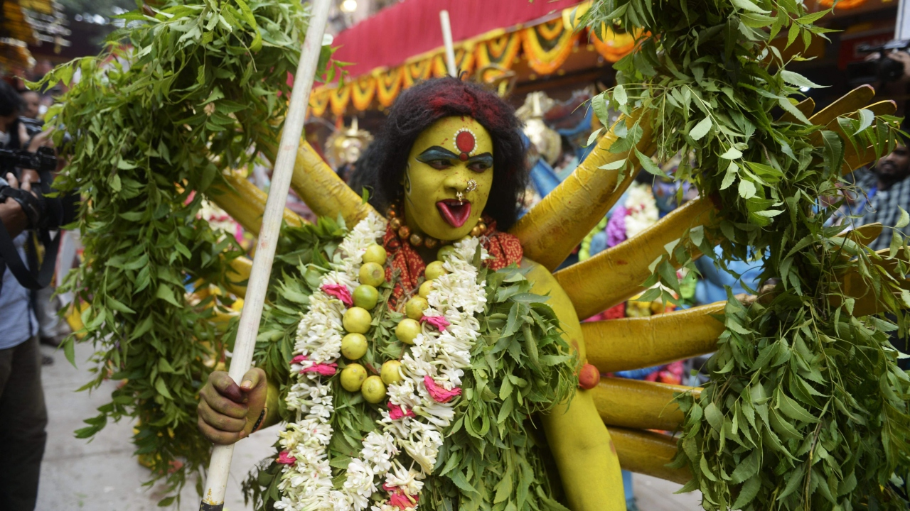
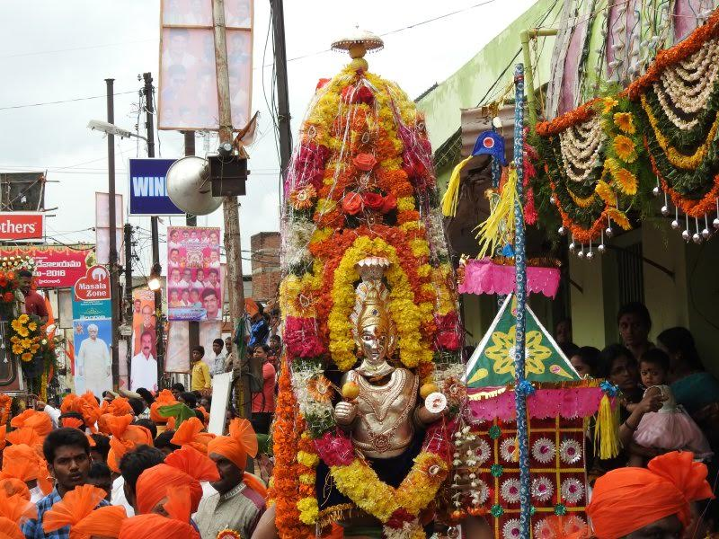
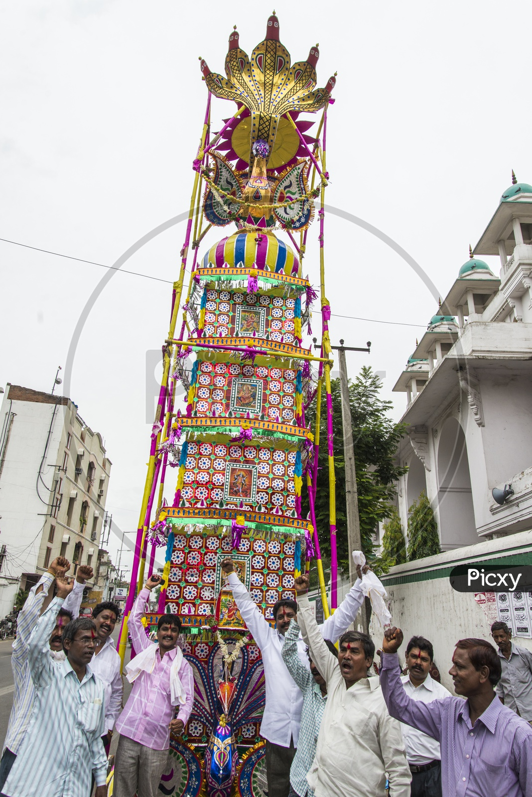

Bonalu

Bonalu is a festival of offering to the Mother Goddess and families share the offering with family members and guests. A non-vegetarian family feast follows after the great the offering. The meat used to prepare the meal is the meat of a goat or a chicken which is an animal for which blessing is taking, killed and later consumed as meal. Peasants take whatever food they can as a display of affection to the earth goddess and eat it later. Toddy workers also offer toddy which they tap for their lively hood. There is no special scriptural mandate on what has to be offered. The tradition is The offerings are made to goddess most importantly toddy - Palm Tree wine is offered along with fowls, sheep and goat. Animals killed for community meals are not considered sacrifices. here are no scriptural books for peasant tradition mother goddess deities requesting meat as offering. The tradition is a peasant festival tradition like the Islamic Bakrid tradition where goat is killed and consumed. Western and Brahmin literature confuses animals consumed in festival time for communal meals in peasant tradition with the sacrifices of Rig Vedic Brahmins where animals were killed by fire priests not for consumption but for ritual reasons. Rig Veda. However with the advent of modernization and strict government control over the prevention of peasant traditions has restricted people to use only pumpkins, bottle gourds, coconuts and lemons. The tradition of community meals associated with peasant traditions was conflated with Rig Vedic system. The festival environment is quite palpable in the locality celebrating the festival, with loud-speakers playing Mother Goddess songs in folk style, and streets are decorated with neem leaves.

Bonalu or Mother energy symbolized as pot which is a Dravidian tradition Festival centered on the goddess is worshiped. It is called Jatara. This tradition is celebrated as an annual festival of Telangana Twin Cities Hyderabad, Secunderabad and other parts of Telangana for Ellamma who is honoured as mother earth. It is celebrated in the month of Ashada Masam, in July/August. Special poojas are performed for Yellamma on the first and last day of the festival. The festival is also considered a thanksgiving to the Goddess for fulfilment of vows. The word Bonam is a contraction of the word Bhojanam, a Sanskrit loanword which means a meal or a feast in Telugu, is an Offering to Mother Goddess. Women prepare rice cooked with milk and jaggery in a new Brass or Earthen Pot adorned with Neem leaves, turmeric, Vermilion and a lit lamp on the top of the Pot. Women carry the pots on their heads and make an offering of Bonam along with Turmeric-Vermilion, Bangles and Saree to the Mother Goddess across the Temples. Bonalu involves the worship of Mother Goddess in regional forms like Polleramma, Ankalamma, Marramma, Bangaramma, Nagarapamma, Gangalamma & Maisamma.
The history of the origin of this festival traces back to the 18th Century the twin cities of Hyderabad and Secunderabad. In the year 1813, plague disease broke out in the twin cities, and this took away the lives of thousands of people. Just before this, a military battalion from Hyderabad was deployed to Ujjain. When this Hyderabadian Military Battalion got to know about the epidemic in the cities, they prayed to the Mother Goddess in Mahankaal Temple - Ujjain, Madhya Pradesh. History tells us, that this military battalion prayed to Goddess Mahankaali, to kill the plague, and if the Goddess would do so, they had decided to install an idol of the Goddess Mahankaali in the city. It is believed that Mahankaali destroyed the disease and kept the pestilence away. Then, the military battalion returned to the city and installed an idol of the goddess, which was followed by the offering of Bonalu to her. Hence, from then, this became a tradition, which has been followed and is still being followed by most of the people of Telangana.
The Festival starts at Golconda

Women carrying Bonalu are believed to possess the spirit of Mother Goddess, and when they go towards the temple, people pour water on their feet to pacify the spirit, who, by nature, is believed to be aggressive. Every group of devotees offer a Thottelu (a small colorful, paper structure supported by sticks), as a mark of respect. It is believed that the Goddess comes back to her maternal home during Ashada Maasam, so people come to see her and bring offerings of food to show their love and affection, just as they would prepare a special meal when their own daughters visit them. The Bonalu celebrations at "Lashkar" Secunderabad twin city of Hyderabad is one of the most prominent bonalu celebrated in the month of Ashadam. The festival begins on the first Sunday of the Hindu Month of Ashada which is known as Edurukolu i.e. the home coming of goddess in the form of Ghatam is celebrated and on the third Sunday of the Ashada month Bonalu Jatara is celebrated and on the following Monday Rangam (Oracle) and Ghatam Saganamputa are celebrated and the festivities come to an end. The prominent temples in the Secunderabad "Lashkar Bonalu" include Sri Ujjaini Mahakali Devasthanam Secunderabad, Sri Gandimaissamma temple regimental bazar near railway station opposite lane, Sri Devi Pochamma Temple Somasundaram Street Secunderabad, Sri Muthyalamma Temple at Kalasiguda, Sri Peddamma Temple at Bata cross roads, Sri Dokkalamma Temple Shivaji Nagar, Sri Muthyalamma temple Ashok Nagar, Sri Peenugula Mallanna Temple near Railway Station, etc. Out of these temples Sri Ujjaini Mahakali Temple and Sri Devi Pochamma Temple Somasundaram Street are Government temples where festivities are visited by Government officials and legislators.
Rangam

Rangam or Performing the Oracle, is held the next morning of the festival. A Women standing a top of an earthen pot invoked goddess Mahankali onto her and performs the custom. She foretells the year ahead when devotees ask about the future. This takes place before the procession is started. The present oracle at Sri Ujjaini Mahakali Devasthanam and other major temples of Secunderabad is Kumari Erupula Swarnalatha who is currently the 6th generation oracle teller. Previously oracle was performed by her elder sister Kum. Swaroopa before her, her grandmother Bagamma and other ancestors include Jogamma, Poshamma
Ghatam
Ghatam is a Copper pot, decorated in the form of mother goddess. The Ghatam is carried by a priest, who wears a traditional Dhoti and body with smeared in turmeric . The Ghatam is taken into procession from first day of the festival till last day, when it is immersed in water . The Ghatam in usually accompanied by drums. Ghatam is followed after Rangam. The festival concludes with immersion of Ghatam. The ghatam leads the procession, placed a top an elephant and accompanied by mounted horses and models depicting Akkanna and Madanna. It ends in the evening with a glittering procession and display followed by immersion of ghatams in Water bodies. A Carnival-like atmosphere, where thousands of people wait along the main streets of cities and watch the exquisitely and elaborately decorated Ghatams. Young men dance in a unique style to the drum beats and folk songs alongside Pothuraju, dress-up in various mythological roles. The Ghatams of the Secunderabad City (Lashkar) include Ujjaini Mahakali & Mahadevi Pochamma at Karbala Maidan, Dokkalamma at Himam Bavi, Muthyalamma at Kalasiguda, Nallagutta, Pan Bazar, Chilkalguda, Uppara Basthi, Kummariguda, Regimental Bazar and Bhoiguda, etc
Thottela
Thottela is also a part of the festival bonalu, its one the offerings to the goddess it is artifact of telangana people which is made of the bamboo sticks and colorful transparent papers it looks like a TEMPLE DOOM which is called as thottela.